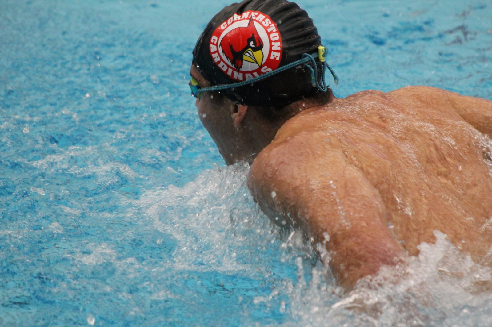
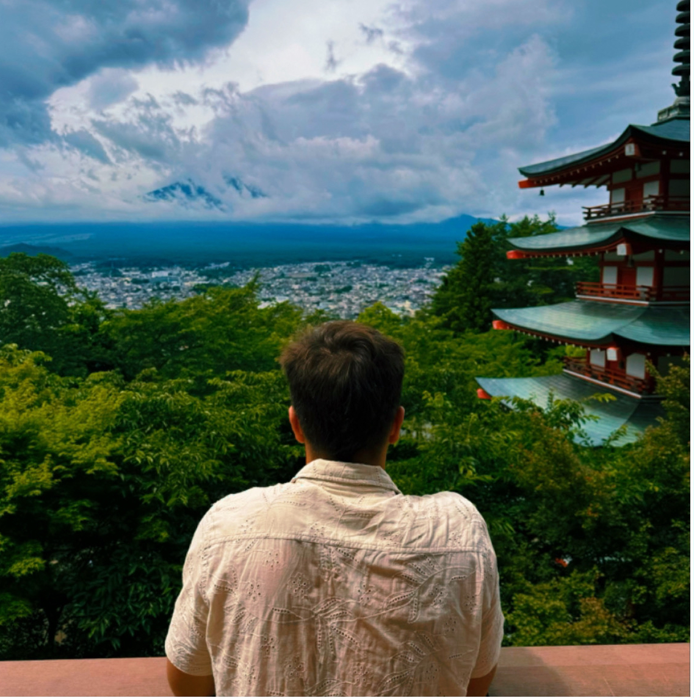

A first-year honors student at the University of North Carolina at Chapel Hill, I am majoring in Biochemistry and minoring in Japanese with a desire to pursue medicine. Growing up in Greensboro, North Carolina, the essence of equality has always intrigued me. From visiting the chairs of the first sit-in of the Civil Rights Movement, to going on walks through the Downtown History Museum since the age of six, the fair treatment of people regardless of background has always been at the forefront of my mind. As I grew, I began swimming at seven years old, which pushed me to apply my desire for supporting others’ voices through team effort. Swimming competitively for 12 years thereafter, my passion to provide for others in team contexts matured. Depending on others, I learned measures regarding the significance of understanding who they were. Through understanding who they were, I gained the ability to have meaningful connections in and out of the water, and I found that cultural competence led me to discover their language.
This led me to, throughout middle school, become intrigued by the study of foreign languages, contributing to my analytical sense of mind. After taking chemistry in high school, I began to see STEM as a language within itself. During my sophomore year of high school, I began tutoring chemistry, calculus, and Spanish to other students through team-based approaches, where I incorporated student ideas into a specialized manner of instruction for each individual. The summer of my junior year, I studied abroad in Japan, solidifying my grasp on the language and strengthening my push for diverse connections through advocacy. Consequently, during my junior year of high school, I founded the Cornerstone Charter Academy International Club. Through this club, I actively bridged gaps in our school’s diversity through celebration of a new culture each week, as well as fundraising for CWS Greensboro.
This demonstrates my ability to provide and advocate for underrepresented populations, thereby stimulating equality in my community. In a desire to directly support my community, I began volunteering at the Cancer Center of Moses Cone Hospital during my senior year of high school. This not only developed my capabilities in interpersonal situations, but also led me to get my EMT certification through Guilford Technical Community College that summer as a method of providing care for others.

Toward the future, I plan to offer this unique insight and experience with diversity in mind for each patient that I touch. Through my involvement in biochemical research at UNC, I further the understanding of the molecular processes that occur within our bodies. By increasing the comprehension of these topics, I blend the process of community-education initiatives, mitigating the lack of access to amenities–be it knowledge or direct healthcare–that many patients have. With a future in emergency medicine, I aspire to be the physician that will not only treat the patient, but advocate against the obstacles that get in the treatment’s way.